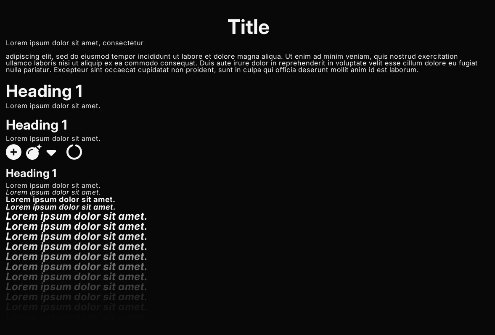
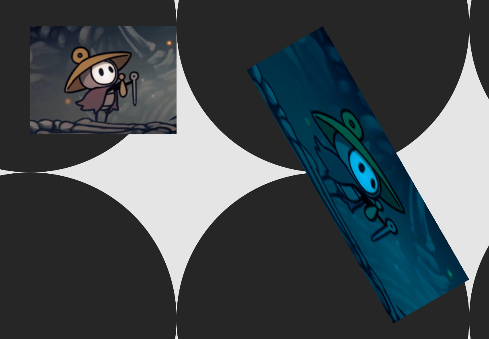
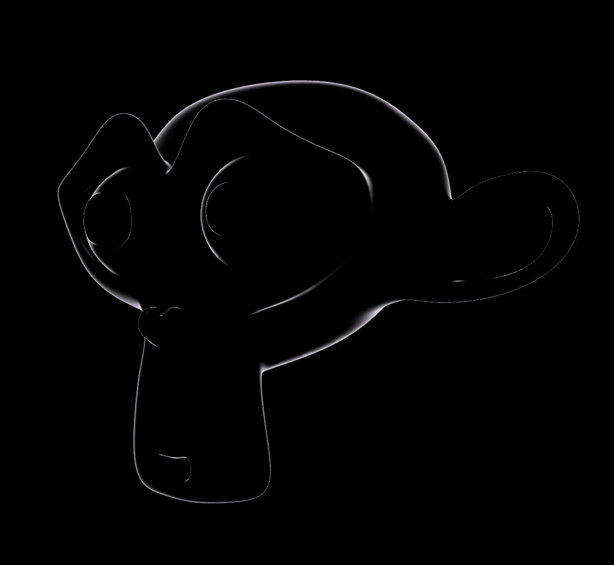
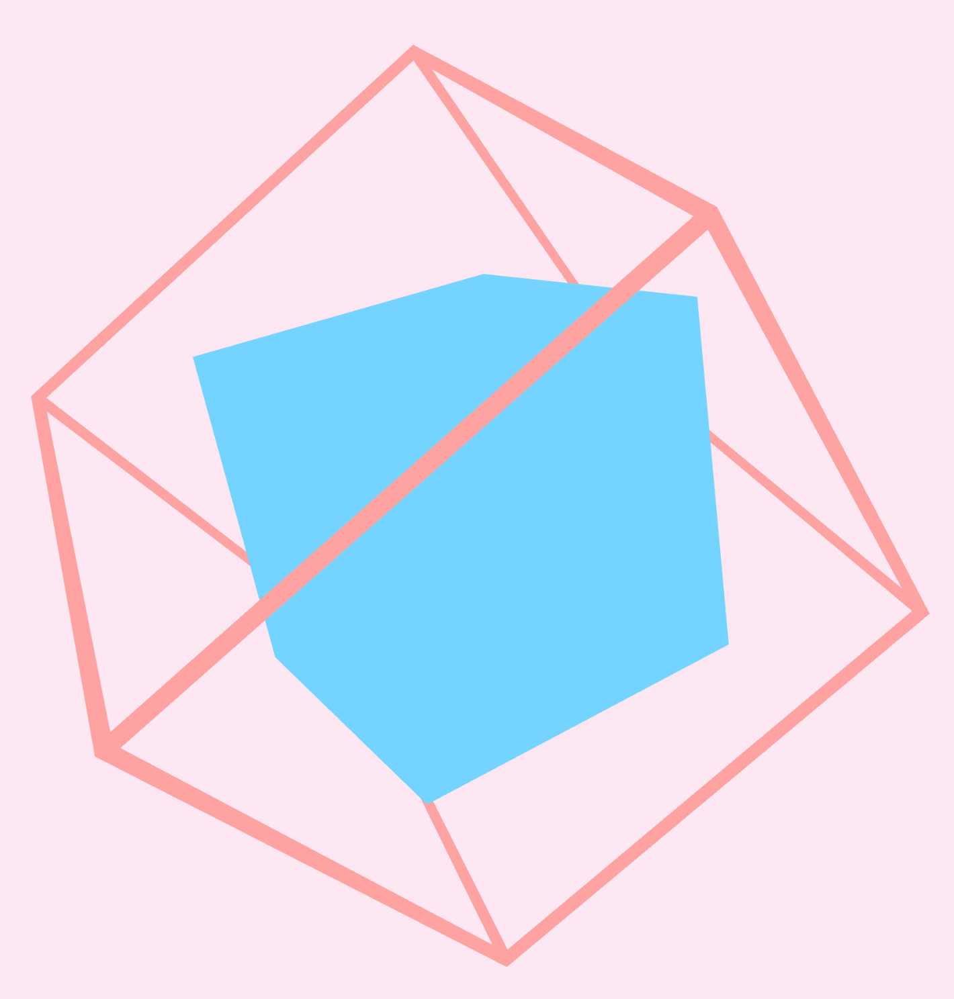
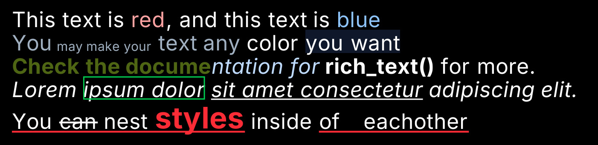
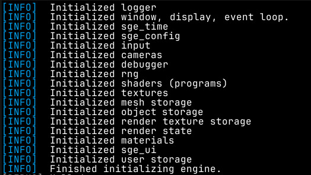
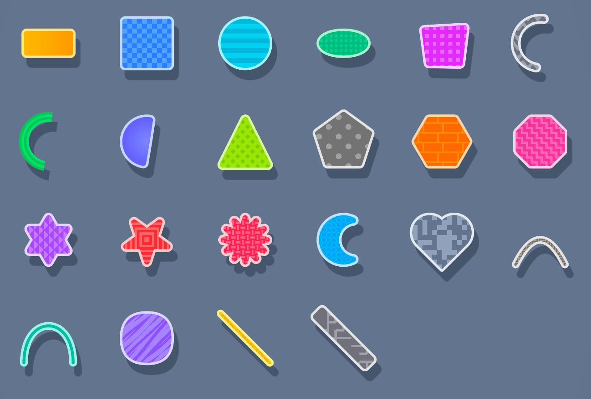
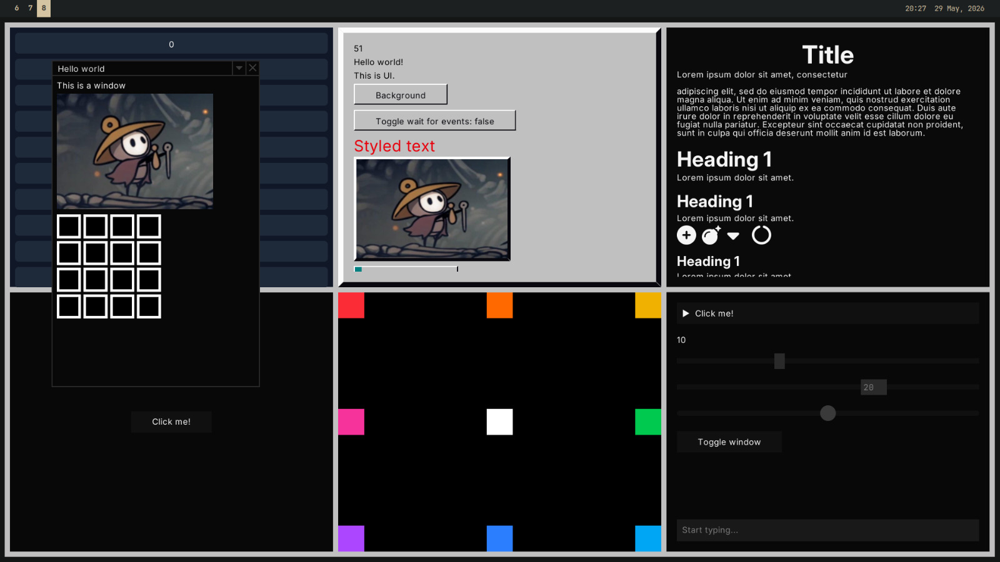

Simple Game Engine
SGE requires that you have the Rust toolchain installed, and some familiarity with rust.
To create a new Rust project, you can run cargo new my_project, and replace
my_project with whatever you want to call your game/app. To add SGE to your project run cargo add sge.
cargo new my_project
cd my_project
cargo add sge
Throughout this guide there will be links to examples that you can read and use
to find out more about how SGE works and how to use it. To run these, clone the
repository and use cargo run --example like so:
git clone https://github.com/lilyRL/sge
cd sge
cargo run --example name_of_example
Do not include the .rs in the name of the example.
Nix
If you use Nix/NixOS, there is a shell.nix included in the repository that you
can use to build and use the engine, though it was written with Wayland in mind.
If you don’t know what Nix is you can safely ignore this entirely.
Architecture
SGE was designed to be flexible and easy to use, even for someone unfamiliar with Rust, for this reason it does not impose any set structure on how you must organize your code.
The most basic SGE project is a single file with this structure:
use sge::*;
#[main("Title for the window")]
async fn main() {
// do initialization here
loop {
// if you don't include this, it will be cleared to black by default.
// if you don't want to clear the screen, use `dont_clear_screen()` instead
clear_screen(Color::BLACK)
// frame loop here
// do anything you want to run once per frame, like drawing some shapes
if should_quit() {
// you can do whatever you want here
// i just find it makes more sense to break out of the loop
// and do the cleanup at the bottom of the function
break;
}
next_frame().await;
}
// do cleanup here
}For more complex apps it may make more sense to store state in a struct, created
at the start of the main function, and then have a frame loop comprised of just state.update().
The main function can optionally return a result (anyhow is included, use
anyhow::Result<()>), which will be unwrapped.
Most functions that return a large amount of data (for example loading a
texture or sound) actually return a reference to the data, so you can pass around your
TextureRef (for example), and clone/copy it without worrying about the
performance cost.
We will talk more about why async is needed, what the #[main] macro is for,
and how to initialize the engine with custom parameters later.
Drawing Shapes
There are two main spaces that shapes can be drawn to.
- Screen space: coordinates are relative to the top left of the screen, and one unit always corresponds to one pixel. Positive y is down, positive x is right.
- World space: coordinates are relative to the position and scale of the
Camera2D. Moving the camera changes what is shown on screen, and one world unit does not always correspond to one pixel. By default, world coordinate(0, 0)is in the center of the screen.
Every shape drawing function comes in three variants:
draw_<shape>(...)— draws in screen spacedraw_<shape>_world(...)— draws in world spacedraw_<shape>_to(..., renderer)— draws to a specific renderer
Shapes
The following shapes are available:
- Circles and ellipses:
draw_circle,draw_ellipse,draw_circle_outline,draw_ellipse_outline,draw_circle_with_outline,draw_ellipse_with_outline - Sectors and arcs:
draw_sector,draw_sector_outline,draw_sector_with_outline, and ellipse variants of each. Angles are in radians. - Rings:
draw_ring,draw_full_ring,draw_arc - Rectangles and squares:
draw_rect,draw_square, with optional rotation and outline variants. Rounded corners are supported viadraw_rounded_rectanddraw_rounded_square. - Polygons:
draw_polyfor arbitrary n-sided regular polygons,draw_hexagon,draw_hexagon_pointyfor flat and pointy-top hexagons. - Lines:
draw_line,draw_capped_line(with rounded ends),draw_dashed_line,draw_zig_zag,draw_rounded_line - Arrows:
draw_arrow,draw_solid_arrow,draw_sharp_arrow, and right-angled variants of each - Paths:
draw_path(connected line segments),draw_connected_path(with caps at each join),draw_circle_path(with circular dots at each point) - Curves:
draw_quadratic_bezier,draw_cubic_bezier - Triangles and quads:
draw_tri,draw_quad - Custom shapes:
draw_custom_shapebuilds a mesh from an arbitrary slice of points - Niche shapes:
draw_pentagon,draw_octogon,draw_hexagram,draw_pentagram,draw_star,draw_moon,draw_heart,draw_quadratic_circle - Pixels:
draw_pixel,draw_pixel_line - Metaballs:
draw_metaballs - SDFs:
draw_sdffor drawing anSdfobject directly (see Advanced Shapes)
Outlines
Most shapes have outline and with-outline variants:
draw_<shape>_outline(...)— draws just the outline, no filldraw_<shape>_with_outline(...)— draws the shape with both fill and outline
For example, to draw a square in world space with an outline:
#![allow(unused)]
fn main() {
draw_square_with_outline_world(
vec2(20.0, 30.0), // top_left
40.0, // size
Color::RED_500, // fill
2.0, // outline thickness
Color::RED_300, // outline color
);
}Gradients
Multipoint linear gradients can be drawn with draw_multipoint_gradient, which takes a list of GradientPoints each with a color and relative width, and an Orientation (horizontal or vertical).
For radial gradients and more advanced fill effects, use the Sdf type directly (see Advanced Shapes).
See: /examples/simple.rs
See: all shape drawing functions
Color type
SGE comes with a Color type, with rgba as f32 values from 0.0 to 1.0.
Creating colors
#![allow(unused)]
fn main() {
// float (0.0–1.0)
Color::from_rgb(1.0, 0.5, 0.0)
Color::from_rgba(1.0, 0.5, 0.0, 0.8)
// u8 (0–255)
Color::from_rgb_u8(255, 128, 0)
Color::from_rgba_u8(255, 128, 0, 200)
// hsl
Color::from_hsl(30.0, 1.0, 0.5)
Color::from_hsla(30.0, 1.0, 0.5, 0.8)
// oklch
Color::from_oklch(0.7, 0.15, 142.0)
Color::from_oklch_with_alpha(0.7, 0.15, 142.0, 0.8)
// From hex constant (compile-time)
Color::hex(0xFF8800)
Color::hex_alpha(0xFF8800FF)
// from a string at runtime (rgb, hsl, oklch, hex, and named colors)
Color::from_string("oklch 0.7 0.15 142")
Color::from_string("#FF8800")
Color::from_string("rgb 1.0 0.5 0.0")
Color::from_string("rebecca purple")
// every CSS and Tailwind color is available as a constant
Color::RED_500
Color::NEUTRAL_900
Color::CYAN_400
}Modifying colors
#![allow(unused)]
fn main() {
color.with_alpha(0.5)
color.with_red(1.0)
color.with_alpha8(128) // u8
color.lighten(0.2)
color.darken(0.3)
// or oklch
color.lighten_oklch(0.2)
color.darken_oklch(0.1)
color.saturate(0.5)
color.desaturate(0.3)
color.hue_rotate(90.0) // degrees, HSL
color.hue_rotate_oklch(45.0) // degrees, oklch
color.inverted()
Color::blend_two(Color::RED_500, Color::BLUE_500, 0.5)
color.blend(other, 0.3)
color.blend_halfway(other)
Color::grey(0.5) // brightness
}Palettes
Tailwind color palettes are availible from 50 to 950.
#![allow(unused)]
fn main() {
let shades = Color::RED.shades(); // light to dark
let shades = Color::BLUE.reversed_shades(); // dark to light
}Converting colors
#![allow(unused)]
fn main() {
color.to_oklch() // (lightness, chroma, hue)
color.to_hex_string() // "#RRGGBBAA"
color.to_hex() // u32
color.to_color_u8() // ColorU8 (for images)
color.to_linear() // sRGB to linear RGB
}Color schemes
There are some built in colorschemes you can use if you like.
Check the reference documentation for the full list of methods.
See also: color related documentation
Input API
The input API is simple, SGE provides functions for querying the current state of keyboard and mouse buttons.
If you want to run some code whenever the space bar is pressed, you could use this code inside of your frame loop:
#![allow(unused)]
fn main() {
if key_pressed(KeyCode::Space) {
// do whatever
}
}There are also functions for mouse buttons, and keys being held and released:
#![allow(unused)]
fn main() {
key_held(KeyCode::KeyA);
mouse_released(MouseButton::Left);
}You can also query the position of the cursor:
#![allow(unused)]
fn main() {
pub fn cursor() -> Option<Vec2>; // current position of the cursor, if it is in the window
pub fn last_cursor_pos() -> Vec2; // if the mouse cursor is outside the window, return it's last position
pub fn cursor_diff() -> Vec2; // how much the cursor moved
}See: input module documentation for more detail.
Action mapping
There is support for creating named actions, and binding them to keys/mouse buttons. You can then use equivalent functions to check if they are pressed/released/held.
Actions are most easily created using the actions! macro.
#![allow(unused)]
fn main() {
actions! {
FWD, BACK, RIGHT, LEFT, JUMP
}
// Generated code:
// const FWD: Action = Action::new(0);
// const BACK: Action = Action::new(1);
// const RIGHT: Action = Action::new(2);
// const LEFT: Action = Action::new(3);
// const JUMP: Action = Action::new(4);
}You can then bind an action to a key by using the bind function.
#![allow(unused)]
fn main() {
bind(FWD, KeyCode::KeyW);
bind(BACK, KeyCode::KeyS);
bind(RIGHT, KeyCode::KeyD);
bind(LEFT, KeyCode::KeyA);
bind(JUMP, KeyCode::Space);
}And use them like any other button.
#![allow(unused)]
fn main() {
if action_pressed(FWD) {
// move forward
}
}This makes it easier for you to allow the player to change their preferred controls for your game, by binding them to different keys, without you needing to change the rest of your codebase.
See: input module documentation for more detail.
See also: /examples/action_mapping.rs
See also: clipboard module documentation
Gamepad
You can get a handle to the gamepad input state with gamepad::input(). With
this, you can get an iterator of the connected gamepads and their IDs with gamepad::input().gamepads().
Using a Gamepad, which can also be obtained from
gamepad::input().gamepad(id), you can query the state of the buttons and
sticks using the methods on the Gamepad struct.
Importantly:
.right_stick,.left_stick, and.d_padfor getting the input of sticks/dpad as a vector..is_pressedfor checking if agamepad::Buttonis pressed
See: gamepad module
See also:
/examples/gamepad.rs
for an example on how to use the API, and to test if your controller is being
recognised properly.
Time
You can use time() to get the time the program has been running in seconds,
and delta_time() to get the time since last frame in seconds.
There is also physics_time() and physics_delta_time() which uses the
‘physics timer’. The physics timer can be sped up, slowed down, and paused using
set_physics_speed, pause_physics_timer and play_physics_timer. This
isn’t related to the physics system, and wont speed it up.
There are also some convenience methods you can use, like once_per_second or
once_per_n_seconds which only returns true once every some timeframe, and
oscillate which moves between two values once per second, oscillate_t lets
you provide your own time value, so you can speed it up or whatever.
See: time module for full list of functions
Drawing text
There are 3 types of text drawing functions:
draw_text_*: for basic text drawing.draw_multiline_text_*: for properly drawing text with newlines in it.draw_wrapped_text_*: for drawing text with a max width, that wraps when it gets to the edge.
There are also equivalent functions for measuring the area text will take up when drawn. These shouldn’t be too slow as a cache is maintained internally.
There are functions for drawing text quickly, which only take the text and
position, and draw with the default monospaced font. You can use draw_text_ex
and draw_text_custom to specify the font used, text color, and more.
Fonts
Fonts can be loaded with
create_ttf_font.
SGE comes with JetBrains Mono as it’s
default font, and when the extra_fonts feature is enabled (by default), also 5
variants of the Inter typeface, for regular, bold,
italic, bold italic, and display. These are availible as the constants MONO,
SANS, SANS_BOLD, SANS_ITALIC, SANS_BOLD_ITALIC, and SANS_DISPLAY.
If you experience stuttering when drawing text, you can pre-populate the cache of letters.
#![allow(unused)]
fn main() {
font_ref.populate_font_cache(&Font::latin_character_list(), 24);
}You can also specify the filtering methods of the font texture.
#![allow(unused)]
fn main() {
font.use_linear_filtering();
font.use_nearest_filtering();
}Typeface
The Typeface struct groups fonts of the same typeface together so that they
can be used for things like rich text.

See:
/examples/text.rs
for an example
See: text module documentation for more detail.
Textures
Textures can be loaded using one of the following:
include_texture!: Bake bytes of image file into binary, and load them from that. This comes with the benefit of working without using any outside files from the executable, meaning you only need to give someone one file to play your game.load_texture_sync: synchronously load texture from file path.load_texture_from_bytes_sync: synchronously load texture from bytes.load_texture: asynchronously load texture from file path.load_texture_from_bytes: asynchronously load texture from bytes.
All of these functions return a TextureRef, which is just a wrapper around an integer, and can be passed around/copied at almost 0 cost. This reference is also guaranteed to always be valid, so long as you don’t use any of the unsafe functions associated with Ref types.
You can inspect the total number of currently tracked textures in the engine by calling num_registered_textures().
Textures can be drawn by using one of the following:
draw_texture(_world): simply draws a texture at some position at some scale.draw_texture_scaled(_world): allows you to draw the texture at any scale, without respecting the original aspect ratio.draw_texture_ex: contains additional options like an arbitrary transform, tint, and the option to only draw a region of the whole texture.
Apart from loading raw files, you can manage textures using the following methods:
SgeTexture::empty(width, height): Allocates a blank, uninitialized texture container on the GPU with the specified pixel dimensions.SgeTexture::from_engine_image(image): Converts an in-memoryImagestruct directly into an uploadable texture layout.download_to_image(&self): Downloads pixel data from the GPU back into an accessible CPU-sideImage. This supports both float and unsigned byte formats with three or four color components, and automatically maps raw byte streams back into standard pixel collections.
Example of advanced texture drawing from demo.rs:

See: texture module documentation
Audio
Sounds can be loaded using one of the following:
include_sound!: Bake bytes of sound file into binary, and load them from that. This comes with the benefit of working without using any outside files from the executable, meaning you only need to give someone one file to play your game.load_sound_sync: synchronously load sound from file path.load_sound_from_bytes_sync: synchronously load sound from bytes.load_sound: asynchronously load sound from file path.load_sound_from_bytes: asynchronously load sound from bytes.
All of these functions return a SoundRef, which is just a wrapper around an
integer, and can be passed around/copied at almost 0 cost. This reference is
also guaranteed to always be valid, so long as you don’t use any of the unsafe
functions associated with Ref types.
Sounds can be played in one of two ways:
-
play_sound: simply plays a sound reference without blocking. -
play_sound_ex: plays a sound and returns aSoundBuilderobject, allowing you to add effects to the sound before playing with.start().Here is an example of how you might use this:
#![allow(unused)] fn main() { play_sound_ex(sound) .fade_in(Duration::from_millis(800)) .volume(0.5) .start(); }You can find a list of effects in the
SoundBuilderdocumentation.
See: /examples/simple_sound.rs
See: sound module documentation
See also:
/examples/space_game.rs
for a game with sound effects.
Camera
2D
The 2D camera controls how objects are drawn in world space. You can get access
to the camera with get_camera_2d and get_camera_2d_mut, and use the methods
on the Camera2D object to move around, zoom in and out, rotate, and more.
The provided functions world_to_screen, and screen_to_world can be helpful,
for example to find the position of the cursor in world space, instead of screen space.
3D
You can get access to the camera with get_camera_2d and get_camera_2d_mut,
and use the methods on it to move around, change the FOV, and change between a
perspective and isometric projection.
Controllers
Camera controllers can be used to easily let the user controller the camera,
without having to implement it from scratch. Camera controllers are used by
creating a mutable instance of the struct once, and calling .update() on it
every frame.
#[main("Game")]
fn main() {
let mut controller = PanningCameraController::new();
loop {
controller.update();
// rest of game logic
}
}2D
The 2D camera supports the following camera controllers:
PanningCameraController: Allows the user to (optionally) pan and zoom the camera using the scroll wheel, and a customizable button (defaults to left click).CameraShakeController: allows for easy shaking of the camera, by using.add_trauma(amount: f32).
3D
The 3D camera supports the following camera controllers:
OrbitCameraController: Allows the user to orbit the camera around a point and zoom in and out, with many configuration options.FirstPersonCameraController: Allows the user to look around in the first person, using the mouse.
See: camera module documentation
3D
The support for 3D is less fleshed out than for 2D at the moment, but it is being worked on.
The workflow for 3D is different to 2D, as it would be too inefficient to rebuild 3D meshes every frame, so they are retained. You can create a 3D mesh from a .obj file. Instead of using a set flat/textured/patterned material like in 2D, you can use any shader/material you want on 3D objects. There are built-in functions for creating generic flat/physically shaded materials of different colors, or you can create your own.
#![allow(unused)]
fn main() {
let program = include_program!(
"./material_shader/outline_vertex.glsl",
"./material_shader/outline_fragment.glsl"
)?;
let material = Material::new(program)
.with_color("outline_color", Color::PURPLE_100)
.with_float("outline_width", 0.3)
.create();
let object = Object3D::from_obj_bytes_with_material(
include_bytes!("../assets/models/suzanne.obj"),
material,
)?;
}Objects then need to be drawn every frame with object.draw().

Materials
A material is just a collection of a vertex shader, fragment shader, and named
uniforms. Uniforms can be set using material.set_*, and can be used to pass
data from the CPU into the shader.
#![allow(unused)]
fn main() {
let threshold = (time * 0.2).sin() * 0.5 + 0.5;
mat.set_float("dissolve_threshold", threshold);
}#version 150
in vec3 v_normal;
in vec3 v_position;
in vec2 v_tex_coords;
in vec3 v_world_position;
out vec4 color;
uniform float time;
uniform float dissolve_threshold; // used here
There are some uniforms that are set automatically by the engine, and are availible in all material shaders:
view_proj_matrixmat4model_matrixmat4normal_matrixmat3timein seconds, floatdelta_timein seconds, floatrandomnumber to use as a seed, floatscreen_sizein pixels, vec2camera_posvec3
See: /examples/material_shader/vertex.glsl
See: /examples/material_shader/fragment.glsl
Shapes
In addition to loading shapes from an object, there are also functions for creating simple shapes from some parameters. So far there are only:
cubiod/cube(also_from_extentsand_with_orientation)line_3dandline_3d_flatcube_wireframeandcube_wireframe_flat
Example from shapes_3d.rs:

Some rendering details
2D rendering works in layers. When you use new_draw_queues() or use a
post-processing effect, a new set of draw queues will be created, meaning that anything new that is drawn will be
drawn over everything drawn previously, no matter what.
In the case of a post-processing effect this is almost always what you want, but if it isn’t you may need to be careful of what order your drawing functions run. If this is a problem for you, decouple your update functions from drawing functions that don’t mutate state, so that drawing functions can run in any order.
Within a single draw queue, objects drawn in screen-space will always be drawn above objects drawn in world space. You can overwrite this using a new set of draw queues.
Scissors
A scissor is basically a filter to a rectangle of the screen, it will prevent
rendering of any pixels outside of that rectangle for the duration of that
scissor being active. You can add and remove them with push_scissor and
pop_scissor. Pushing a scissor when another scissor is already active will set
the scissor to the intersection of both of them, so things will only be drawn
if they are inside both rectangles.
#![allow(unused)]
fn main() {
// this will draw a semi-circle
push_scissor(Area::new(vec2(window_center().x, 0.0), window_size()).to_rect());
draw_circle(window_center(), 500.0, Color::WHITE);
pop_scissor();
}Async
Using an async main function and next_frame().await allows SGE to run coroutines.
Coroutines
A coroutine is a function that can pause execution and resume later. Coroutines do not return a value. They run alongside the main loop on the same thread and update every frame.
When a coroutine calls .await on a future, it pauses. At the end of the frame, SGE updates all active coroutines. If the future is ready, the coroutine continues executing.
use sge::*;
#[main("Title")]
async fn main() -> anyhow::Result<()> {
// Start a coroutine from an async function
let coroutine = start_coroutine(count());
loop {
if coroutine.is_done() {
draw_text("Done", Vec2::ZERO);
}
if should_quit() {
break;
}
// next_frame().await updates engine systems and advances running coroutines
next_frame().await;
}
Ok(())
}
// Draws numbers from 0 to 99, incrementing each frame
async fn count() {
for i in 0..100 {
draw_text(i, Vec2::ZERO);
// Pauses this function until the next frame
next_frame().await;
}
}You can use coroutines for tasks that span multiple frames, like cutscenes or timed events. Track the status of a coroutine using coroutine.is_done().
Other async functions
SGE also has some other async functions worth knowing about, such as ones to wait a certain amount of time, and for loading resources from disk/bytes in the background so it doesn’t interrupt the user by freezing the program while it’s loading.
#![allow(unused)]
fn main() {
// Pause for 2.5 seconds
wait_for(2.5).await;
// Pause for 10 frames
wait_for_frames(10).await;
}See: Exec module
The main macro
The #[main()] macro is just a helper that makes it more simple to initialize
the engine. All it does is replace:
#[main("Window title")]
async fn main() {
// do stuff
}With:
fn main() {
sge::init("Window title").unwrap();
sge::run_async(async {
// do stuff
});
}init creates the window and sets everything up. run_async sets up an asynchronous
environment for your code to run in, and makes sure it is updated once per frame.
Window
There are numerous functions for querying and changing the properties of the window, for example if it is in fullscreen or how big it is in pixels.
See: window module documentation
Cursor icons
You may set the current cursor icon to use with one of these functions, it will only last for one frame, so you should re-set the cursor icon every frame.
#![allow(unused)]
fn main() {
// in frame loop/function called every frame
if is_hovered {
use_pointer_cursor_icon();
}
}Debugging
SGE comes with a set of tools for measuring performance and resource usage, useful for checking for any inefficiencies or memory leaks.
There are functions for checking performance directly.
avg_fpsmax_fpsmin_fpsget_draw_callsget_drawn_objectsget_engine_timeget_index_countget_max_draw_callsget_max_drawn_objectsget_max_engine_timeget_max_index_countget_max_vertex_countget_vertex_count
See: debugging module
There are also some built-in debug visualisations such as drawing a window, using the engine’s built-in UI library, that shows graphs of the number of vertices/indices drawn and lots of other information.
Use draw_debug_info for graphs, or draw_simple_debug_info for just numbers
(better performance).
See: debug visualisations module
Rich Text
Rich text supports rendering multiple styles, colors, sizes, and formatting modes inside a single text object.
You can construct rich text manually from RichTextBlocks, or parse it from a lightweight HTML-like syntax using rich_text(str).
Parsing performs tokenization + style tree construction, so avoid reparsing every frame. Parse once and reuse the resulting RichText.
Quotes around argument values are optional as long as the value does not contain spaces (e.g. #abc).
<font size=50>
This text is <font color=red3>red</font>,
and this text is <font color=blue3>blue</font>
<font color=#abc>
You <font size=30>may make your</font> text any
</font>
<font color="rgb 1.0 1.0 1.0">
color <hl color=slate9>you want</hl>
</font>
<font bold color="oklch 0.7 0.1184 119">
Check the docume
</font>
<font italic color=blue2>
ntation for
</font>
<b>rich_text()</b> for more.
<i>
Lorem <ol color=green5>ipsum dolor</ol>
<ul>sit amet consectetur</ul>
adipiscing elit.
</i>
<ul color=red5>
You <st>can</st> nest
<font color=red5 size=70 bold>styles</font>
<noul>inside</noul>
of eachother
</ul>
</font>

Rich text can be drawn with .draw or .draw_world, and the text will be
wrapped within the area provided, and printed to stdout (the terminal), with
most of the formatting applied.
| Tag | Information | Supported arguements |
|---|---|---|
| <b> <bold> <strong> | Makes the text inside of it | None |
| <i> <italic> <em> | Makes the text inside italic | None |
| <font> | More complex styling like font size | size, color, bold, italic, underline, strikethrough, outline highlight |
| <ul> <underline> | Specifies an underline for text inside | color |
| <st> <strikethrough> | Specifies strikethrough for text inside | color |
| <nost> <no-strikethrough> | Removes strikethrough for text inside | None |
| <hl> <highlight> <bg> | Specifies a background fill for the text inside | color |
| <nohl> <nobg> <no-highlight> | Removes highlight for text inside | None |
| <ol> <outline> | Specifies an outline around the text inside | color |
| <noul> <no-underline> | Removes underline for text inside | None |
Argument values can unquoted when the argument has no spaces.
<font color=red5>
<font color="#abc">
<font color="rgb 1.0 1.0 1.0">
Rich text can also be printed to stdout with .print_to_stdout(), and will
retain most of the formatting in the terminal. If it looks weird, check if your
terminal supports true color.
Rich text is used by the logging system.
See: rich_text.
Logging
SGE provides a log backend, that can be optionally drawn to the screen and printed to stdout.
draw_logs() can be used to draw all the logs to the screen as rich text, when wanted.

Messages can be logged out using the included standard log macros. Shown in
descending order of importance:
error!for logging out critical errors. Shown by default.warn!for logging out things that may be errors or indications of a bug, but do not stop the program from working. Shown by default.info!for logging out useful information. Shown by default.debug!for logging out debug info messages. Not shown by default.trace!for logging out very minor information that could be useful for tracking down a bug. Not shown by default.
The minimum log level can be set with
set_min_log_level,
to show only logs equal to or more important than some log level, or disabled entirely.
The logger has multiple verbosity levels that can be configured
using set_logger_verbosity.
Logs will be printed to the terminal by default.
See: logging module
File System API
SGE provides functions to interact with the file system that integrate with the
engine’s async system, so that you can read/write to files in the background,
while showing a loading screen for the user. This includes functions for loading
resources like textures, where the image decoding will be done on another thread.
See: FS module
See also: /examples/async_asset_loading.rs
RNG
Most games need random numbers. You can generate them with these functions:
-
get_next_counter: returns 0 the first time you call it, returns the number one more than the last time you called it on all following times -
rand: generic function that returns a random value of the type you pass it, as long as that type supports random generation. -
rand_bool: Return a bool with a probability p of being true. -
rand_choice: returns a random element from an array, if the array is empty it panics. -
maybe_rand_choice: returns none if choices are empty, returns random choice otherwise -
rand_color: returns a random color -
rand_f32: generates f32 between -1 and 1 -
rand_range: generates a random number between two values -
rand_ratio: return a bool with a probability of numerator/denominator of being true. -
rand_usize: returns a random usize -
rand_vec2: returns a random vec2 -
rand_vec3: returns a random vec3 -
rand_vec4: returns a random vec4 -
id!(): returns a constant random number. baked at compile time, won’t change each time it is run, but will change if it is used in multiple places. This will make more sense if you know how macros work in Rust.#![allow(unused)] fn main() { id!() != id!(); let mut numbers = vec![]; for _ in 0..5 { numbers.push(id!()); } // every number in numbers is equal }
See: rng module
Image API
Images are
like textures, but stored on the CPU. Images can be loaded and parsed
from image files like .png and .jpg, and their contents can be manipulated
by indexing into the buffer directly or using the many methods on the
Image struct
to draw shapes.
Unlike when GPU rendering, working with an Image requires you to use the
ColorU8
type, which uses u8 values for (r,g,b,a), that range from 0 to 255,
where white is (255,255,255,255). ColorU8 can be converted to Color and vice
versa with .to_color and .to_color_u8.
An image can be uploaded to a GPU texture with
SgeTexture::from_enginen_image
and a GPU texture can be downloaded to an image with texture.download_to_image().
See: image module
Math API
SGE exposes a fork of bevy_math
with lots of useful types and functions for math/linear algebra.
You can see a list of the included items here. I would recommend looking through the documentation for Vec2 at least as it is used everywhere.
Particle System
Create a particle system with ParticleSystem::new(), and spawn emitters or one
shot particle spawners when needed, then run .update() and .draw() or
.draw_world() once per frame to see the particles onscreen. You can customize
lots of parameters to change how the particles act.
#[main("Particles")]
fn main() {
let mut particles = ParticleSystem::new();
let batch = ParticleOneshot::builder()
.shape(&Rect::new_square(Vec2::ZERO, 20.0, Color::YELLOW_500))
.size_randomness(5.0)
.color_randomness(Color::new(0.3, 0.1, 0.1))
.direction_randomness(0.5)
.speed(40.0)
.speed_randomness(3.0)
.rotation_speed_randomness(0.2)
.end_color(Color::RED_700)
.acceleration(vec2(0.0, 1.0))
.acceleration_randomness(vec2(0.0, 0.2))
.lifetime(2.0)
.quantity(100)
.build();
loop {
if should_spawn_particles {
particles.spawn_oneshot(&batch, position)
}
particles.update();
particles.draw();
if should_quit() {
break;
}
next_frame().await;
}
}See: particles module
See also:
/examples/space_game.rs
for a more complex example of how particles can be used.
Persistence API
When making a game or application you will inevitably want to store some kind of state between launches, so that you aren’t starting from scratch each time you run the program. SGE provides a simple high-performance interface to make this easier.
To use the persistence API, create a state struct, and annotate it with the
#[persistent] attribute macro.
#![allow(unused)]
fn main() {
#[persistent]
struct State {
score: u64,
player_color: Color,
enemy_state: EnemyState,
}
#[persistent]
struct EnemyState {
health: f32,
position: Vec2,
}
}The persistent macro will generate the functions state.save(path),
State::load(path), state.to_bytes(), and State::from_bytes(bytes), for any
struct that has fields that are all also serializable.
Serializable types include:
- Most builtin Rust types, numbers, strings, etc.
- Anything supported by
rkyvout of the box. - Most of the SGE types you would want to use this with
- Vectors
- Both colour types
- Any other custom struct you write, as long as it is also decorated with
#[persistent]
Performance
This uses rkyv under the hood, which
performs zero-copy serialization, meaning that it is very fast, so you can save
often if you want. Do not save/load every frame.
Physics API
The physics API is based on rapier2d.
Create a PhysicsWorld with PhysicsWorld::new(). This returns a WorldRef that you call .update() on each frame to step the simulation.
Rapier2D uses positive y up, but SGE uses positive y down, so coordinates converted before being returned, so that the position in the world can be the same as the position onscreen. A conversion rate of 100 pixels per Rapier2D meter is used.
#[main("Physics")]
fn main() {
let mut world = PhysicsWorld::new();
loop {
world.update();
if should_quit() {
break;
}
next_frame().await;
}
}Creating Objects
There are three types of physics objects:
- Dynamic: affected by gravity and forces, collides with everything.
- Fixed: immovable, used for walls, floors, and static geometry.
- Kinematic: moved manually (e.g. via
set_position), but participates in collision detection.
#![allow(unused)]
fn main() {
let dynamic_obj = world.create_dynamic(Bounds::Circle(20.0));
let wall = world.create_fixed(Bounds::Rect(Vec2::new(1000.0, 50.0)));
let platform = world.create_kinematic(Bounds::Rect(Vec2::new(200.0, 20.0)));
}Each of these also has a _with variant that accepts a ColliderConfig for customizing physical material properties:
#![allow(unused)]
fn main() {
let bouncy = world.create_dynamic_with(
Bounds::Circle(15.0),
ColliderConfig::default()
.restitution(0.9)
.friction(0.1)
.density(2.0),
);
}Objects can be removed with .remove().
Once created, objects can be manipulated using the methods on the ObjectRef struct.
#![allow(unused)]
fn main() {
let obj = world
.create_dynamic(Bounds::Circle(15.0))
.with_position(Vec2::new(200.0, 100.0))
.with_velocity(Vec2::new(150.0, 0.0))
.with_ccd(); // continuous collision detection
// Reading state
let pos = obj.get_position();
let vel = obj.get_velocity();
let rot = obj.get_rotation(); // all rotations are in radians
let mass = obj.get_mass();
obj.set_position(Vec2::new(300.0, 200.0));
obj.set_velocity(Vec2::new(0.0, -100.0));
obj.set_rotation(std::f32::consts::PI * 0.25);
obj.add_velocity(Vec2::new(50.0, 0.0));
obj.add_force(Vec2::new(0.0, -500.0));
obj.move_by(Vec2::new(5.0, 0.0));
obj.set_angvel(2.0); // rad/s
obj.add_angvel(0.5);
}Bounds
Bounds describes the shape of a collider. The available variants are:
Bounds::Circle(radius)Bounds::Rect(Vec2): full size from centerBounds::Capsule { half_height, radius }: vertical capsuleBounds::CapsuleX { half_width, radius }: horizontal capsuleBounds::Triangle(a, b, c): relative to the object’s positionBounds::ConvexHull(points): computed from a point cloudBounds::Polyline(points): a series of connected line segments, useful for terrainBounds::Line { a, b }Bounds::Compound(children): multiple shapes combined, each with an offset
Sensors
Sensors are not physical objects, other objects will pass right through them, but they still check if something is colliding with them.
#![allow(unused)]
fn main() {
let sensor = world
.create_fixed_with(Bounds::Circle(80.0), ColliderConfig::default().sensor(true))
.with_position(Vec2::new(400.0, 300.0));
if sensor.is_colliding() {
// something is inside the sensor
}
}Collisions
#![allow(unused)]
fn main() {
if obj.is_colliding() { ... }
if obj.is_colliding_with(other) { ... }
if let Some(points) = obj.check_collision_with(other) {
let normal = points.normal;
let depth = points.depth;
}
for info in obj.collisions() {
let other: ObjectRef = info.other;
let normal: Vec2 = info.points.normal;
match info.event {
CollisionType::Started => { /* wasn't colliding last frame, colliding now */ }
CollisionType::Ongoing => { /* colliding last frame, still colliding now */ }
CollisionType::Stopped => { /* was colliding last frame, not anymore */ }
}
}
}World Settings
#![allow(unused)]
fn main() {
world.set_gravity(980.0); // in pixels/world units, so 9.8 will be very slow
let g = world.get_gravity();
}Debug Visualization
You can draw outlines of all colliders and collision normals for debugging:
#![allow(unused)]
fn main() {
world.draw_colliders();
// or
world.draw_colliders_world();
}Colliders are drawn in red, objects currently in collision are highlighted in yellow with arrows showing the collision normals.
See: physics module
See also: /examples/physics.rs
Post-processing effects
You can apply post processsing effects onto the screen with one of the following functions:
bloom_screenblur_screenbrighten_screenchromatic_abberation_screencontrast_screenfilm_grain_screengreyscale_screenhue_rotate_screeninvert_screenpixelate_screensaturate_screensharpen_screenvignette_screen
These effects will be applied to everything that has already been rendered out on the screen, but not anything that was rendered afterwards. This will also create new draw queues.
Render Textures
You may for whatever reason want to render to a texture instead of the screen, you can do this with render textures, which are just a collection of a normal color texture and depth texture.
You can create a texture with create_empty_render_texture().
#![allow(unused)]
fn main() {
let size = UVec2::new(50, 50);
let render_texture = create_empty_render_texture(size.x, size.y)?;
loop {
clear_screen(Color::BLACK);
// any drawing functions run after this function will draw to the texture
// instead of the screen. you don't need to pass anything extra into them.
// be careful to always call end_rendering_to_texture().
// i would recommend to reduce the chance of bugs that you never call end_rendering
// in a different part of the code as start.
start_rendering_to_texture(render_texture);
// actually clearing texture
clear_screen(Color::WHITE);
draw_square(vec2(10.0, 10.0), 50.0, Color::SKY_500);
end_rendering_to_texture();
if should_quit() {
break;
}
next_frame().await;
}
}Some use cases to consider:
- Using a lower resolution for a retro-effect, but with better performance than
drawing at full resolution and then using
pixelate_screen(). - Splitscreen multiplayer, draw once for each player to textures, and then position them on the screen.
Advanced Shapes
Shapes that cannot be represented by vertices (i.e.: have smooth edges, like circles), are drawn using signed distance functions, this means that they are drawn exactly, no matter how much you zoom in.
You can access the signed distance function object directly to specify additional effects like a drop shadow, corner radius, or a patterned fill.
For example:
#![allow(unused)]
fn main() {
let object = Sdf::pentagram(c, 50.0)
.with_fill(Color::RED_500, Color::RED_400, 0.0, 5.0, SdfFill::Grid)
.with_corner_radius(5.0)
.with_stroke(2.0, Color::RED_200, SdfStroke::Outside)
.with_shadow(vec2(10.0, 10.0), 10.0, Color::NEUTRAL_900);
draw_sdf(object);
}Here is a sample of the shapes, patterns and effects possible (from the SDF example).

See: SDF module
See: /exampes/sdf.rs
Storage API
Games often have a lot of unrelated systems running in parallel. This can lead to lots of confusing code to manage the state of all the different parts of your code, and extra effort to make state availible to the functions that need to read/mutate it.
In complex projects, you may choose to use the storage API to mitigate this complexity, at the cost of it being less clear what parts of the code could be mutating state.
The storage API lets you store and retrieve custom state structs from a global
store. Just create a unique state type, and use storage_init_state to store
it, and storage_get_state and storage_get_state_mut to retrieve it.
struct MyState {
score: usize,
}
fn main() {
// ...
let state = MyState { score: 0 };
storage_store_state(state);
// ...
}
fn show_score(pos: Vec2) {
let state = storage_get_state::<MyState>();
draw_text(state.score.to_string(), pos);
}There are some other functions you may want to do with storage listed here.
See: storage module
UI
Finally… I’ve been waiting a long time to write this chapter. This is the #1 best part of the engine, no contest. THE USER INTERFACE LIBRARY!!!
The UI library is split into 2 sections. There is a library of base unstyled
elements that you can use to create more complex user interfaces of any style,
and a set of styles widgets from a few categories, at the moment there is flat
(the most comprehensive), material (meant to mimic Google Material UI 3;
supports theming), and w95 (meant to mimic Windows 95, not really updated).
Complex layouts can be created by combining the basic base
components in a nested arrangement. The base components are designed to be as
simple as possible so as to be very flexible and be able to be used for many
different things by combining them with other elements. For example, instead of
a single div element like in HTML, there are smaller simpler elements for
adding a fill, adding a border, centering an element, adding padding, etc.
Base elements are designed to be as flexible as possible. For example, the slider element allows you to create the bar and handle from other UI elements, meaning you can have it look however you want. For an example of how this works, check the source code for the flat slider
“The best way to learn about something is to see and use it for yourself”
-Sun Tzu
Thanks Sun, for this reason, I will point you to the ui_showcase example. If
you dont remember how to run examples, check the introduction chapter. This
example has a list of every UI element, and shows them in action. I would
reccomend you look through this with the code for the example open in another
window to see how everything is used.
Here’s an awful looking screenshot from the ui example.

See: ui module